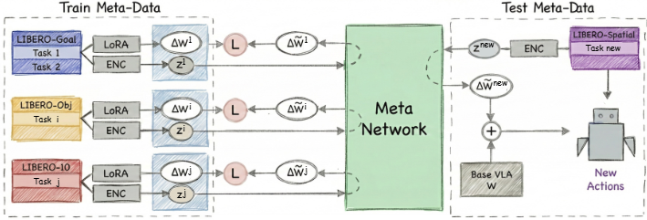
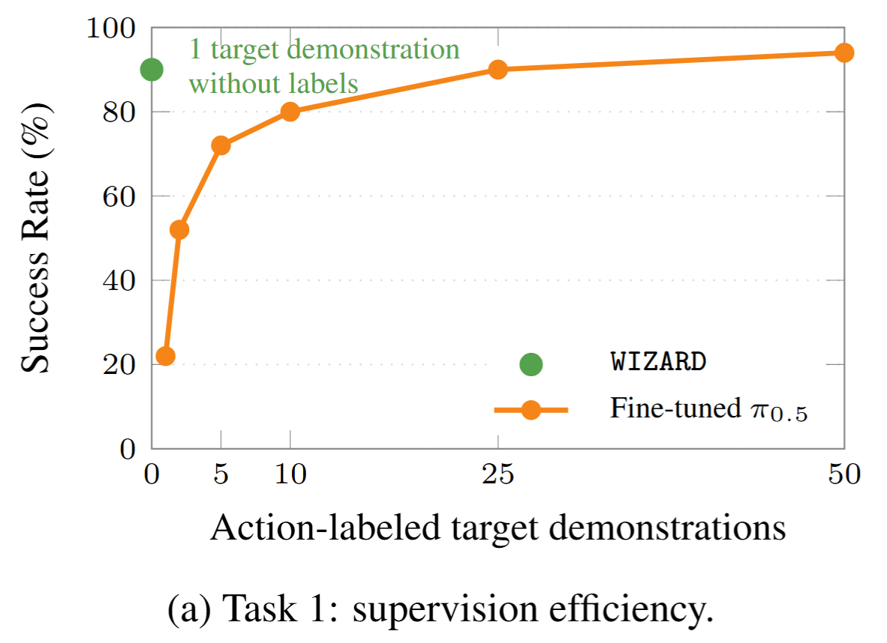
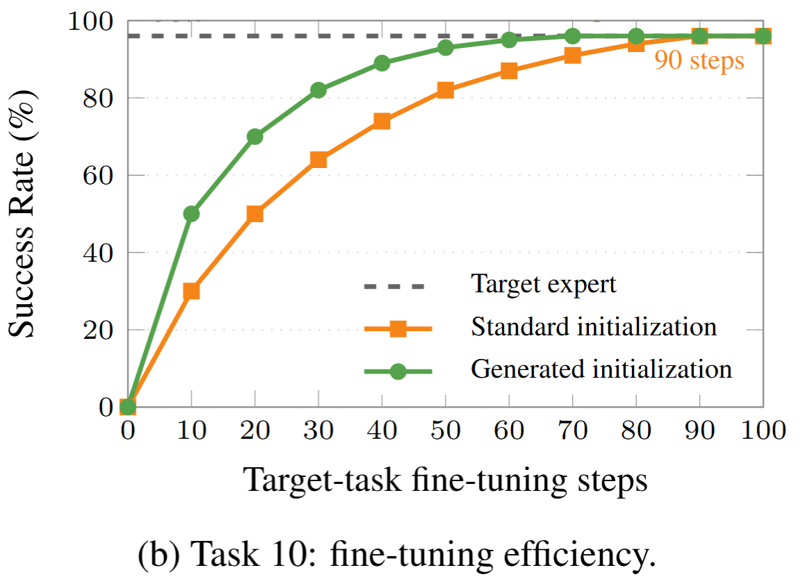

BUILD TASK EXPERTS
Expert construction: train a LoRA expert for every source task on top of a frozen pi0.5 backbone. Their state-action trajectories are used only here, to provide weight-space targets.
Overview
Standard VLA adaptation is bottlenecked by task-specific action labels and test-time optimization. WIZARD removes both: it predicts LoRA weights directly from language + video evidence, then injects them into a frozen policy for zero-shot execution. It is evaluated on LIBERO, MetaWorld ML45 and a real Franka Panda.
The method is trained with a meta-dataset of pairs (task embedding, expert LoRA update) and adds three robotics-specific design principles: multimodal weight structuring, scale-aware generation, and alignment-oriented supervision in weight space.

Method
Expert construction: train a LoRA expert for every source task on top of a frozen pi0.5 backbone. Their state-action trajectories are used only here, to provide weight-space targets.
Weight inference learning: encode a language instruction and a demonstration video with the frozen VLA encoder, then train a meta-network to reconstruct expert LoRA updates in weight space.
Deployment-time adaptation: infer LoRA weights in one forward pass (about 0.07 s) and inject them into the frozen policy, with no action labels and no gradient updates.
Evaluation
Split rule: on LIBERO, meta-train on three suites and evaluate on the unseen fourth. MetaWorld ML45 uses 45 source tasks and 5 held-out tasks.
Fixed starts: each LIBERO task is evaluated over 50 rollouts, and each real-robot task over 30.
Reference methods: pretrained pi0.5, nearest-neighbor adapter retrieval, one-demonstration fine-tuned pi0.5, and LoRA-Gen. WIZARD uses the same demonstration without its action labels.
Spatial reasoning| Bowl on stove to plate.
Object-centric transfer| Orange juice to basket.
Goal-conditioned behavior| Wine bottle to cabinet top.
Real Robot
Both methods start from the same DROID-pretrained pi0.5 checkpoint. One task is held out and the other four serve as source tasks. Fine-tuning uses one action-labeled demonstration, while WIZARD uses it without actions (30 rollouts per task).
Grasp and lift| Robust banana pickup from clutter.
Reach and pick| Stable cup pickup in real scene.
Analysis
On LIBERO-Spatial Task 1, WIZARD reaches 90% success from one unlabeled demonstration, while fine-tuning needs about 25 action-labeled demonstrations to match it.

On LIBERO-Spatial Task 10, initializing from the generated adapter reaches the 96% target-expert level after 70 fine-tuning steps vs 90 steps from the standard initialization.

On LIBERO-Spatial, language-only conditioning fails (0%), vision-only reaches 25%, and both together reach 40%. Gemma and Qwen embeddings give 0%, whereas the frozen VLA representation reaches 40%. More target demonstrations do not help under mean aggregation (40, 40, 39, 40% for 1, 3, 5, 10).
At rank 16, WIZARD generates a 46.1M-parameter adapter (1.27% of the adapted pi0.5 parameters) in about 0.07 s using 1.74 GB on an NVIDIA A6000. Generating the full 3.62B-parameter policy exceeds 48 GB of memory.
Citation
@misc{bianchi2026roboticpolicyadaptationweightspace,
title={Robotic Policy Adaptation via Weight-Space Meta-Learning},
author={Christian Bianchi and Siamak Yousefi and Alessio Sampieri and Andrea Roberti and Luca Rigazio and Fabio Galasso and Luca Franco},
year={2026},
eprint={2606.07217},
archivePrefix={arXiv},
primaryClass={cs.RO},
url={https://arxiv.org/abs/2606.07217}
}